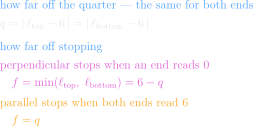
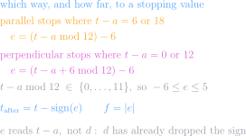
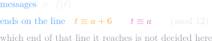

<meta charset="utf-8">
<title>Pair node — the arithmetic instead</title>
<meta name="viewport" content="width=device-width, initial-scale=1">
<link rel="stylesheet" href="pair.css">

<header>
  <h1>The arithmetic instead</h1>
  <div class="sub">one round, and the whole run — with no states, no transitions, and nothing to
    step</div>
</header>

<nav>
  <a href="index.html">Index</a>
  <a href="anatomy.html">Anatomy</a>
  <a href="own.html">Ownership</a>
  <a href="vectors.html">Vectors</a>
  <a href="math.html">Math</a>
  <a href="formulas.html">Formulas</a>
  <a href="dots.html">Separation</a>
  <a href="perpendicular.html">Perpendicular</a>
  <a href="cases.html">Cases</a>
  <a href="channels.html">Channels</a>
  <a href="cycle.html">Cycle</a>
  <a href="updates.html">Update rules</a>
  <a class="on" href="arith.html">Arithmetic instead</a>
  <a href="clock.html">Clock</a>
  <a href="geometry.html">Geometry</a>
  <a href="asym.html">Asymmetry</a>
</nav>

<!-- The maths blocks are update-closed-*.svg, set in LaTeX by mathblocks.py (pairmath.sty
     carries the rebuild command). Nothing here is loaded over the network.

     This page is deliberately NOT a restatement of updates.html. Its claim is that the
     node's behaviour can be written down instead of stepped through, so nothing here may
     use the machine's vocabulary — no state, no transition, no link, no next or prev, no
     settle. If a line needs one of those words, it belongs on the update-rules page.

     AND THE PROSE IS THE SAME RULE. A keynote line that restates the block above it in
     English is the machine's habit in another form: it makes the maths look like a summary
     of the real explanation instead of being it. Bullets here earn their place only by
     saying what the notation cannot — why a step is available, or what it would cost. -->

<main class="onesize">

  <div class="grid">

    <div class="card wide">
      <p class="lead"><a href="updates.html">Update rules</a> gives this node as two state machines
        and the rule each message runs. None of that is needed. Two numbers in, and where it stops
        and how many messages it takes come out.</p>
    </div>

    <h3 class="secname">What there is</h3>

    <div class="card wide">
      <h2>Two numbers, one arrow each</h2>
      
      <div class="keynote">
        <p>a is a normal, so the quarter turn is already in it before anything is measured. That is
          why the two arrangements come out 6 apart rather than 0 and 6 — the shift is in a itself,
          not applied afterwards</p>
        <p>no abs and no min, because the pair sorts itself: two counts a half turn apart cannot
          both be under 12, nor both over. Asking which one is under 12 is the whole of the work
          that folding used to do</p>
        <p>t = 11 against a = 0: from the top u = 11, from the bottom v = 23. The 11 is under 12,
          so the top reads 11 and the bottom reads 1</p>
        <p>neither count says which way to turn — they are counts, not directions. Nothing here
          needs one: two readings say between them what a single number and a sign would have to</p>
      </div>
    </div>

    <h3 class="secname">How far off</h3>

    <div class="card wide">
      <h2>One number, off the quarter</h2>
      
      <div class="keynote">
        <p>q is the same off either end, because the two readings sum to 12 and 6 is halfway. That
          is why one q settles both arrangements, and why their two f are complements — the same
          fact the <a href="audit.html">audit</a> found by drawing them</p>
        <p>parallel stopping when BOTH ends read 6 is the same statement as a lying on the normal
          line: a quarter turn from each end of the tilt line is the normal and its opposite</p>
      </div>
    </div>

    <h3 class="secname">One round</h3>

    <div class="card wide">
      <h2>Where it is after one message</h2>
      
      <div class="keynote">
        <p>nothing here is negative and nothing is a sign. A node draws both ends of its line, and
          reading a off both is what a single number cannot do — collapse the pair and
          the second reading has to come back as the sign of the first</p>
        <p>each arrangement stops when a lands ON one of the node's own drawn lines:
          perpendicular on the tilt itself, parallel on the normal. That is what its two stopping
          values are — the two ends of one line</p>
        <p>so the two readings always sum to 12, and f is the smaller of them. No subtraction from
          6, and no separate rule per arrangement — only which line is read</p>
        <p>the cost is the comparison in the last line, which the signed version bought its way out
          of. That is the whole trade: one number and a sign, or two readings and no sign</p>
        <p>readings summing to 12, stopping on a drawn line, and f being the smaller reading are
          all swept over every pair by
          <span data-src="nodes/Node1/node_test.go#TestOneRoundIsSignAndRemainder">TestOneRoundIsSignAndRemainder</span></p>
      </div>
    </div>

    <h3 class="secname">The whole run</h3>

    <div class="card wide">
      <h2>Where it stops, and when</h2>
      
      <div class="keynote">
        <p>f is the count as well as the reading — each message closes one slot, so there is no
          message number f + 1, and f = 0 is the run that takes none</p>
        <p>the ANSWER needs no direction at all. Mod 12 a tilt and its bottom are the same number,
          so both ends of the line are one arrangement, and where the walk ends is settled without
          ever saying which way it went</p>
        <p>the walk cannot turn back, which is what lets f be known before it starts. Swept by
          <span data-src="nodes/Node1/node_test.go#TestTheWalkIsClosedForm">TestTheWalkIsClosedForm</span></p>
      </div>
    </div>

    <h3 class="secname">What this does not say</h3>

    <div class="card wide">
      <h2>It holds while a is held</h2>
      <div class="keynote">
        <p>a is fixed here. A live pair moves both ends, so this is one node against a direction that
          stays put — which is why the code keeps a comparison per message rather than this shortcut,
          and why the exchange itself is on <a href="updates.html">Update rules</a></p>
      </div>
    </div>

  </div>

</main>
